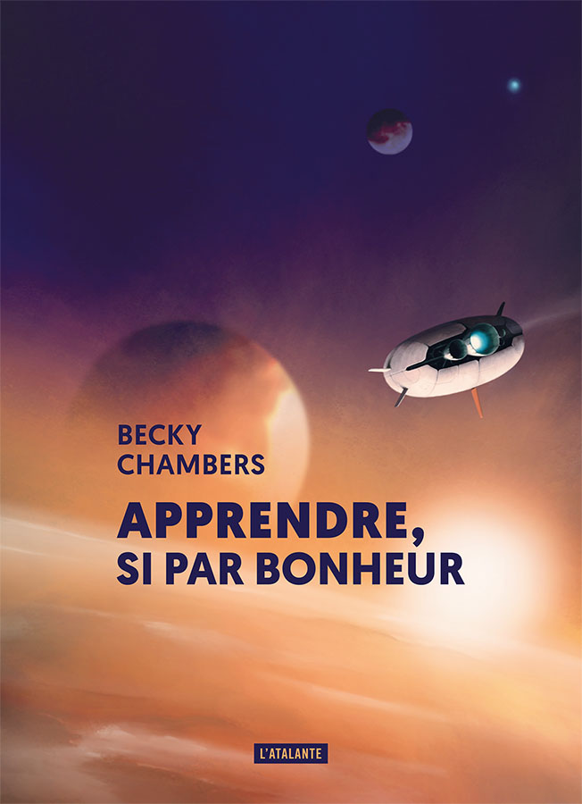

Littérairement parlant, c’est La volonté de se battre, troisième tome de la série Terra Ignota, qui m’a surtout occupé ce mois-ci. J’ai déjà évoqué ailleurs mon attachement tout particulier à cette série écrite par Ada Palmer, qui a réussi à construire un univers complexe et fascinant porté par une narration du même niveau. Trop semblable à l’éclair, premier tome de la série, m’a diverti du premier confinement ; Sept Redditions, sa suite, m’a sorti d’un été aux allures de drôle de guerre caniculaire. La volonté de se battre m’a-t-il fait oublier la montée de la troisième vague ? Et bien oui, merci. L’histoire avance, toujours portée par un narrateur dont on se demande tout de même parfois s’il ne joue pas volontairement avec nos pieds ou s’il n’est pas en train de complètement perdre les pédales. Ces facéties narratives nécessitent une véritable implication, mais sont pour moi un vrai plaisir. Qu’importe au fond si le narrateur est fou, j’ai envie de savoir ce qu’il veut me raconter et ce qu’il perçoit de son monde. Force est parfois d’admettre que quelques longueurs et flous artistiques peuvent rebuter les lecteurs et lectrices qui ne seraient pas d’emblée subjugués par l’univers décrit, mais ça ne m’empêchera pas de continuer à en parler à tout le monde avec des étoiles dans les yeux.
Après ce gros morceau, j’ai enchaîné avec Apprendre, si par bonheur, de Becky Chambers, trouvé en promo numérique pour le prix d’un petit sandwich. Il s’agit là d’une novella de hard science-fiction dans laquelle on retrouve le ton déjà vu dans la série Les Voyageurs (L’Espace d’un an, Libration,…) de la même autrice : beaucoup de douceur et d’inclusivité. La narratrice y raconte son exploration, au côté de trois autres astronautes, des quatre planètes d’un système planétaire lointain. Je n’ai pas été particulièrement renversé par cette histoire, mais sa brièveté joue pour elle. Les scientifiques en herbe aimeront les passages purement hard-sf, tandis que celles et ceux qui peuvent s’en passer apprécieront leur concision. Enfin, l’un des chapitres (correspondant à l’exploration de la planète Opera) m’a particulièrement accroché, en cela qu’il rompt avec l’excès d’enthousiasme parfois un peu mièvre qui caractérise le récit jusque là.
Avril débutera avec mes deux lectures en cours (d’ailleurs très prometteuses) : Viendra le temps du feu, par Wendy Delorme, et Binti, par Nnedi Okorafor.